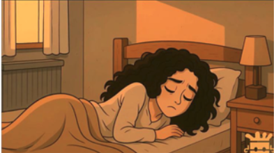
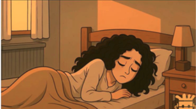
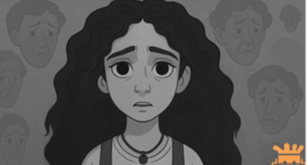
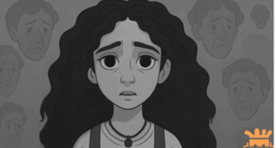

Desarrollo de una muñequera inteligente vinculada a una aplicación móvil web, diseñada no solo para monitorear el pulso cardíaco del usuario, sino también para detectar anomalías en tiempo real. Cuando el brazalete identifique un ritmo cardíaco irregular o peligroso, enviará una notificación inmediata a través de la aplicación, alertando al usuario o al cuidador.
Pero esto no es todo. Este dispositivo ha sido concebido especialmente para brindar apoyo a pacientes en situación de vulnerabilidad o con enfermedades terminales, tales como personas de la tercera edad, pacientes con antecedentes de enfermedades cerebrales, parálisis parcial o total, entre otros.
Desarrollo de una muñequera inteligente vinculada a una aplicación móvil web, diseñada no solo para monitorear el pulso cardíaco del usuario, sino también para detectar anomalías en tiempo real. Cuando el brazalete identifique un ritmo cardíaco irregular o peligroso, enviará notificación inmediata a través de la aplicación, alertando al usuario o cuidador.
Desarrollar una página web informativa para el negocio Goya Cevichochos con el propósito de difundir información sobre sus productos, historia, servicios y ubicación, presentando el contenido de manera clara, atractiva y accesible para los usuarios, utilizando para ello los lenguajes HTML, CSS y JavaScript en el entorno de desarrollo Visual Studio Code y XAMPP.
La página web y la app móvil de THE EYE están pensadas para ofrecerte una experiencia rápida, sencilla y segura, desde cualquier lugar.
Diseño intuitivo: Navega fácilmente, personaliza tus prendas y compra sin complicaciones.
Catálogo interactivo: Mira nuestros productos con fotos reales, detalles y opciones personalizables.
Compra segura: Múltiples métodos de pago y protección de tus datos.
Responsive: Se adapta a cualquier dispositivo: celular, tablet o computadora.
Notificaciones: Recibe novedades, descuentos y el estado de tu pedido al instante.
Soporte en línea: ¿Dudas? Te ayudamos directo desde la plataforma.
Una página web que presenta las carreras como abogado, arquitecto, médico, cada una tiene una oficina virtual en la cual se detalla la información
mismo, chat al cliente por quien elegirlos, una pequeña bibliografía con una foto, sus especialidades, casos y testimonios, una parte de contacto e información de costos.
Así con todas las oficinas virtuales de todas las profesiones mencionadas.
La capacidad de un sistema robótico para percibir y comprender un entorno visual, como el estado de un juego de mesa, abre nuevas avenidas para la aplicación del aprendizaje automático. Un ejemplo claro es la implementación de un brazo robótico que no solo se controle mediante joysticks, sino que también pueda “ver” y reaccionar al tablero de 3 en raya. Esto implica desde algoritmos de procesamiento de imágenes e interpretación de los objetos y el diseño de algoritmos que permitan al robot interpretar el estado del juego.
Algunos objetivos del sistema:

El mensaje invita a la audiencia a tomarse el tiempo para escuchar, procesar, y no dejarse abrumar, recordando que el crecimiento y la sanación son procesos personales.
Este tipo de video busca crear conciencia sobre el estrés emocional, la salud mental y la importancia de escuchar a los demás y a uno mismo.


La animación multimedia en videojuegos se encarga de que todo lo que ves y se mueve en un juego tenga coherencia, estilo y realismo, mejorando así la inmersión y la experiencia del jugador.


Video juego de búsqueda de latas, en un entorno animado que sigue completando niveles para avanzar y salir.


Esta ciudad de la que hablas no es solo un lugar físico. Es una metáfora de la adolescencia: una etapa en la que pensar deja de ser simple, y empieza a tener consecuencias emocionales, físicas, incluso sociales. En esta ciudad, pensar "te cambia", porque ya no es un ejercicio neutro. Pensar demasiado te hace dudar, te hace temer, te hace sentir observado, juzgado, pequeño… aunque no lo seas. A los 14, las decisiones pequeñas —como elegir ropa o mandar un mensaje— ya no son simples. Se convierten en batallas internas, en laberintos mentales donde el pensamiento se vuelve enemigo. La cabeza "crece" con pensamientos que pesan, que abruman, que no paran. Y el miedo también crece, porque ya no es solo miedo al mundo, sino a uno mismo. Y sin embargo, en esa ciudad todos los demás también viven con ese mismo miedo. Aprenden a caminar con él, a disfrazarlo de confianza, de risa, de indiferencia. Tú apenas estás comenzando a conocerlo, pero reconocerlo ya es un primer paso. Tal vez no se trate de vencerlo, sino de encontrar tu forma de caminar con él, sin que te ahogue.

 

 

Las Damas Dragón, creadoras del cielo, la tierra y todas las criaturas, observaban con gran sabiduría y curiosidad el desarrollo de sus creaciones. En su inmenso poder y entendimiento, decidieron asignar diferentes duraciones de vida a las criaturas: algunas tendrían una existencia breve pero intensa, mientras que otras gozarían de una vida eterna.
Al principio, parecía lógico: una vida eterna permitiría alcanzar toda experiencia posible, todo conocimiento, toda plenitud. Sin embargo, con el paso del tiempo, las Damas comenzaron a notar un fenómeno inesperado. Aquellas criaturas con vidas cortas parecían vivir con mayor intensidad, apreciaban cada momento, sentían con más fuerza el amor, el miedo, la alegría y la tristeza. Para ellas, la muerte no era una tragedia, sino parte del ciclo, una culminación natural que daba sentido a la existencia.
En cambio, las criaturas eternas, al no tener límite, perdían el valor de cada instante. Lo que era raro se volvía común, lo que era significativo se volvía rutina. La inmortalidad no traía felicidad, sino apatía. Sin el fin, no había propósito. Sin muerte, la vida perdía su intensidad.
Así, las Damas Dragón entendieron una lección profunda: la finitud da valor a la existencia. La muerte no es enemiga de la vida, sino su marco, su contraste necesario. Decidieron entonces reequilibrar los tiempos de vida, acortando incluso algunas eternidades para que, en su brevedad, las criaturas volvieran a encontrar sentido, pasión y propósito.